청소년상담사-2급(1교시)(구) (2014-03-29 기출문제)
1과목: 청소년 상담의 이론과 실제
1. 청소년 내담자의 일반적인 특성으로 옳지 않은 것은?
- 상담동기가 부족한 경우가 많다.
- 상담자를 부정적으로 지각하는 경향이 있다.
- 사회적ㆍ물리적 환경으로부터 영향을 크게 받는다.
- 한 가지 일에만 지속적 관심을 유지하는 경향이 있다.
- 형식적 조작기에 이르긴 했지만 인지적 능력이 부족한 경우가 많다.
(정답률: 알수없음)

2. 최근 우리나라 청소년상담 문제의 전반적 경향에 관한 설명으로 옳지 않은 것은?
- 비행상담에서는 학교폭력 관련 문제가 가장 많다.
- 진로상담에서는 진로정보탐색에 대한 요구가 큰 편이다.
- 인터넷 중독 등 컴퓨터 사용과 관련된 문제가 증가하고 있다.
- 또래 관계는 대인관계 문제에서 가장 큰 비중을 차지하는 문제이다.
- 전체 상담에서 가장 큰 비중을 차지하는 것은 성격과 외모에 관한 고민이다.
(정답률: 알수없음)
3. 청소년기의 사회인지발달 특성으로 인해 나타날 수 있는 문제행동을 모두 고른 것은?
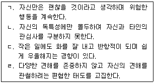
- ㄱ, ㄷ
- ㄴ, ㄹ
- ㄱ, ㄴ, ㄹ
- ㄱ, ㄷ, ㄹ
- ㄴ, ㄷ, ㄹ
(정답률: 알수없음)
4. 마르시아(Marcia)가 언급한 정체감 유예(identity moratorium) 상태인 청소년이 보일 수 있는 반응은?
- 분명한 삶의 목표가 생겼어요.
- 내가 정말 보잘 것 없는 존재 같아요.
- 미래 계획 같은 것은 생각해본 적 없어요.
- 부모님 말만 잘 들으면 되는 것 아닌가요?
- 다른 아이들이 왜 그렇게 고민하는지 모르겠어요.
(정답률: 알수없음)
5. 프로이트(Freud)의 정신분석이론에 관한 설명으로 옳은 것을 모두 고른 것은?
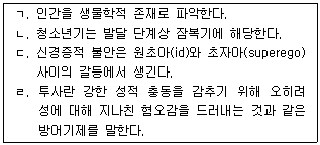
- ㄱ
- ㄱ, ㄷ
- ㄴ, ㄷ
- ㄱ, ㄷ, ㄹ
- ㄴ, ㄷ, ㄹ
(정답률: 알수없음)
6. 개인심리학의 상담기법 중 내담자의 자기패배적 행동 뒤에 감춰진 의도나 목적을 드러내 밝힘으로써 내담자가 그 행동을 하는 것을 주저하게 하는 기법은?
- 격려하기
- 역설 기법
- 스프에 침 뱉기
- 단추누르기 기법
- '마치 ∼인 것처럼' 행동하기
(정답률: 알수없음)
7. 행동수정 기법과 그 예가 옳게 짝지어진 것을 모두 고른 것은?
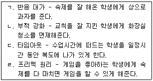
- ㄱ, ㄴ
- ㄷ, ㄹ
- ㄱ, ㄴ, ㄷ
- ㄱ, ㄷ, ㄹ
- ㄴ, ㄷ, ㄹ
(정답률: 알수없음)
8. 로저스(Rogers)의 인간중심 상담이론에 관한 설명으로 옳지 않은 것은?
- 인간은 동일한 현상에 대해 같은 인식을 갖는 보편적 존재이다.
- 인간은 자기실현을 위해 끊임없이 노력하는 성장지향적 성향을 타고난다.
- 공감이란 내담자의 입장에서 그의 내면세계를 이해하되 동일시하지는 않는 것이다.
- 가치의 조건화란 주요한 타인의 평가에 의해 유기체적 경험이 왜곡되는 것을 말한다.
- 상담의 목표는 자기개념과 유기체적 경험 간의 불일치를 제거함으로써 충분히 기능하는 사람이 되게 하는 것이다.
(정답률: 알수없음)
9. 실존주의 상담에서 상담자의 역할에 관한 설명으로 옳지 않은 것은?
- 내담자로 하여금 자신의 잠재력을 깨닫게 한다.
- 내담자 문제를 분석하고 설명해주는 역할을 한다.
- 내담자가 삶의 불안을 직면할 수 있도록 격려한다.
- 내담자가 있는 그대로의 세상을 볼 수 있도록 도와준다.
- 내담자 스스로 선택과 책임을 활용할 수 있도록 도와준다.
(정답률: 알수없음)
10. 철이는 가족이나 환경에 대한 분노를 자해로 표출하는 문제로 상담을 받고 있다. 철이의 행동을 설명해 줄 수 있는 게슈탈트 상담의 접촉경계혼란 상태는?
- 내사
- 융합
- 투사
- 반전
- 편향
(정답률: 알수없음)
11. 번(Berne)의 교류분석 이론에서 제시한 게임 공식이다. 괄호 안에 들어갈 내용을 순서대로 나열한 것은?
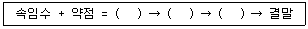
- 혼란, 전환, 반응
- 혼란, 반응, 전환
- 반응, 전환, 혼란
- 반응, 혼란, 전환
- 전환, 반응, 혼란
(정답률: 알수없음)
12. 현실치료이론에 관한 설명으로 옳지 않은 것은?
- 선택과 책임을 강조한다.
- 옳고 그름에 대한 가치판단을 자제한다.
- 인간은 생존, 사랑과 소속, 힘과 성취, 자유, 즐거움의 5가지 욕구를 가지고 있다.
- 바람(wants)→행동(doing)→평가(evaluation)→계획(planning)의 상담과정을 따른다.
- 전 행동(total behavior)은 활동하기, 생각하기, 느끼기, 생리(신체)반응의 4가지 요소로 구성된다.
(정답률: 알수없음)
13. REBT에서 제시하는 합리적 사고의 특성으로 옳지 않은 것은?
- 논리적으로 모순이 없다.
- 경험적 현실과 일치한다.
- 융통성이 있고 유연하다.
- 삶의 목적 달성에 도움이 된다.
- 부정적 정서를 유발하지 않는다.
(정답률: 알수없음)
14. 인지치료에서 제시한 인지적 오류와 그 예가 옳게 연결된 것을 모두 고른 것은?
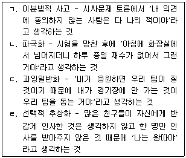
- ㄱ, ㄹ
- ㄴ, ㄷ
- ㄱ, ㄴ, ㄷ
- ㄱ, ㄷ, ㄹ
- ㄴ, ㄷ, ㄹ
(정답률: 알수없음)
15. 관찰학습이론을 청소년상담에 적용할 때 고려해야 할 사항으로 옳지 않은 것은?
- 모델이 매력적일수록 효과가 크다.
- 인지능력이 떨어질 때는 관찰학습이 어려울 수도 있다.
- 복잡한 행동에 대해서는 말로 설명해주는 것이 도움이 된다.
- 실제 인물이 아닌 소설 속의 주인공은 모델로서의 역할을 하기 힘들다.
- 습득한 행동을 실제로 시연해 봄으로써 더욱 정확하게 학습할 수 있다.
(정답률: 알수없음)
16. 청소년상담의 상담목표를 설정할 때, 바람직하지 않은 예는?
- 인터넷 게임을 1시간 줄인다.
- '싫다'고 말할 수 있도록 한다.
- 시험 시간에 긴장하지 않도록 한다.
- 사람들과 원만한 대인관계를 형성하도록 한다.
- 수업시간 시작 전에 교실에 들어가게 한다.
(정답률: 알수없음)
17. 청소년 상담자의 바람직한 태도로 옳은 것은?
- 내담자의 모든 문제를 성실히 해결해준다.
- 취약성이 전혀 없는 상담 전문가처럼 행동한다.
- 내담자에 대한 정보 수집을 최우선으로 한다.
- 상담목표는 상담자가 가정하거나 추측하여 설정한다.
- 상담자가 말한 것을 청소년 내담자가 이해하고 있는지 피드백을 통해 점검한다.
(정답률: 알수없음)
18. 청소년 상담자에게 필요한 전문적 자질에 해당하지 않는 것은?
- 청소년상담에 대한 열의
- 내담자의 문화적 차이에 대한 이해
- 심리검사, 진단분류체계에 대한 이해
- 상담 상황에서 지켜야 할 윤리규정의 숙지
- 실제적인 상담기술 훈련을 포함한 지속적인 자기개발
(정답률: 알수없음)
19. 다음의 특징을 모두 가지고 있는 사이버상담은?
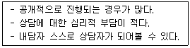
- 화상상담
- 채팅상담
- 게시판상담
- 이메일상담
- 데이터베이스상담
(정답률: 알수없음)
20. 상담자의 윤리에 어긋나지 않는 행동은?
- 청소년 내담자와 상담한 내용을 부모에게 알려준다.
- 동호회 모임에서 친하게 된 부모의 자녀를 상담한다.
- 상담 중 알게 된 아동학대 사실에 대해서는 비밀유지를 한다.
- 비밀보장의 예외 규정은 내담자에게 알리지 않더라도 엄격히 적용한다.
- 청소년 상담에서 부모 상담을 병행할 경우, 누가 내담자가 될 것인지를 명확히 하고 상담을 시작한다.
(정답률: 알수없음)
21. 키치너(Kitchner)의 윤리적 결정 원칙으로 옳은 것을 모두 고른 것은?
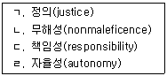
- ㄱ, ㄷ
- ㄱ, ㄹ
- ㄴ, ㄷ
- ㄱ, ㄴ, ㄹ
- ㄴ, ㄷ, ㄹ
(정답률: 알수없음)
22. 상담의 구조화에 관한 설명으로 옳은 것을 모두 고른 것은?
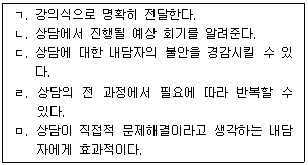
- ㄱ, ㄴ
- ㄱ, ㅁ
- ㄴ, ㄷ, ㄹ
- ㄱ, ㄴ, ㄷ, ㄹ
- ㄴ, ㄷ, ㄹ, ㅁ
(정답률: 알수없음)
23. 상담자 역전이에 관한 설명으로 옳지 않은 것은?
- 상담자가 자각하지 못하면 상담과정에 부정적이다.
- 역전이가 일어나지 않도록 내담자와 거리두기를 한다.
- 수퍼비전의 도움을 받는 것이 역전이를 해결하기 위한 하나의 방법이 될 수 있다.
- 다른 사람을 돌보는 것과 관련된 상담자의 미해결된 욕구는 역전이와 관련이 있다.
- 내담자가 상담자로 하여금 어떤 감정을 느끼도록 무의식적으로 유발시키는 투사적 동일시를 역전이로 볼 수 있다.
(정답률: 알수없음)
24. 상담 종결의 주제로 적절하지 않은 것은?
- 내담자의 호소문제는 명확히 파악되었나?
- 행동변화에 기여한 상담자 요인은 무엇인가?
- 상담종결을 앞둔 내담자의 심정은 어떠한가?
- 행동변화에 기여한 내담자 요인은 무엇인가?
- 상담성과가 미흡한 부분은 무엇이며, 앞으로 어떻게 대처해 나갈 것인가?
(정답률: 알수없음)
25. 상담 중기의 탐색단계에서 상담자가 할 수 있는 바람직한 행동은?
- 친구처럼 행동함
- 주도적으로 말을 함
- 관찰내용을 피드백 해줌
- 조언과 해결책을 제시함
- 자기개방을 많이 함
(정답률: 알수없음)
26. 상담기법 중 해석에 관한 설명으로 옳은 것을 모두 고른 것은?
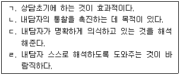
- ㄱ, ㄴ
- ㄱ, ㄷ
- ㄴ, ㄷ
- ㄴ, ㄹ
- ㄷ, ㄹ
(정답률: 알수없음)
27. 내담자의 저항에 관한 설명으로 옳지 않은 것은?
- 불안이 심하여 저항이 뚜렷할 때 해석해준다.
- 상담자의 일방적인 과제 제시는 저항의 원인이 된다.
- 저항을 직면할 수 있는 자아강도가 있을 때 해석해준다.
- 중요한 이야기를 하지 않고 화제를 돌리는 것은 저항의 한 예이다.
- 준비가 되지 않은 내담자에게 빠른 변화를 위해 적극적으로 개입한 것은 저항의 원인이 된다.
(정답률: 알수없음)
28. 괄호 속 상담자의 반응에 해당하는 상담기법은?
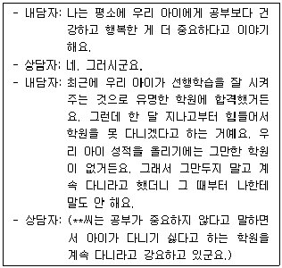
- 직면
- 재진술
- 즉시성
- 명료화
- 태도반영
(정답률: 알수없음)
29. 다음에서 설명하는 집단상담의 단계는?
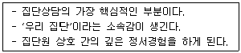
- 참여단계
- 작업단계
- 종결단계
- 과도적 단계
- 추후관리 단계
(정답률: 알수없음)
30. 다양한 상담방법에 관한 설명으로 옳지 않은 것은?
- 전화상담은 정보제공의 기능도 한다.
- 독서치료에서는 잡지를 자료로 사용할 수 있다.
- 미술치료에서 미술매체는 내담자의 인지수준에 따라 재료를 제한해 주어야 한다.
- 음악치료에서 사용되는 음악은 내담자의 선호도가 개입되지 않은 객관적 기준으로 선정한다.
- 사이버상담은 내담자들이 자발적으로 참여하기 때문에 위기상황에 대한 즉각적 파악이 가능하다.
(정답률: 알수없음)
2과목: 상담연구방법론의 기초
31. 연구자가 지켜야 할 연구 윤리 중 '고지된 동의(informed consent)'에 관한 설명으로 옳지 않은 것은?
- 참가동의는 서면으로 받아야 한다.
- 참가자가 연구에 대한 충분한 설명을 들은 후에 참가에 동의하는 것을 의미한다.
- 실험이 진행되는 중에도 언제든지 자유롭게 실험 참가를 그만둘 수 있다.
- 연구자는 실험의 잠재적 위험과 이득을 명확하게 제시해야 한다.
- 부모나 법적 보호자로부터 동의를 받은 미성년 참가자는 참가를 거부할 수 없다.
(정답률: 알수없음)
32. 한 연구자가 청소년기의 사회성 발달을 알아보기 위해 10세 200명, 11세 200명과 12세 200명을 동시에 무선표집하여 집단 간 특성을 비교하였다. 이 연구에 관한 설명으로 옳은 것을 모두 고른 것은?
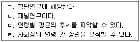
- ㄱ, ㄴ
- ㄱ, ㄷ
- ㄴ, ㄹ
- ㄱ, ㄷ, ㄹ
- ㄴ, ㄷ, ㄹ
(정답률: 알수없음)
33. 양적연구 패러다임에 관한 설명으로 옳은 것을 모두 고른 것은?
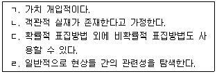
- ㄱ, ㄴ
- ㄱ, ㄷ
- ㄱ, ㄴ, ㄹ
- ㄱ, ㄷ, ㄹ
- ㄴ, ㄷ, ㄹ
(정답률: 알수없음)
34. 유의수준과 유의확률에 관한 설명으로 옳은 것은?
- 가설검정에서 제2종 오류는 유의수준과 일치한다.
- 유의확률이 유의수준보다 낮으면 영가설이 기각된다.
- 영가설이 참일 때 영가설을 기각하는 오류를 '제2종 오류'라 한다.
- 영가설이 참일 때 영가설을 기각할 확률을 '통계적 검정력'이라 한다.
- 유의수준 0.01의 의미는 실제 영가설을 기각해야 하지만 채택하는 경우가 100번 중의 1번 정도임을 의미한다.
(정답률: 알수없음)
35. 연구의 타당도에 관한 설명으로 옳지 않은 것은?
- 표본의 대표성을 확신할 수 없는 경우 외적타당도는 낮아진다.
- 내적타당도는 연구결과에서 나타나는 변화가 독립변인에 의한 영향만을 반영하고 있는가에 관한 것이다.
- 무선배치는 외적타당도를 높이는 반면, 무선표집은 내적타당도를 높일 수 있다.
- 반작용 효과(reactivity effects)란 연구대상자가 자신이 측정되거나 관찰되고 있다는 것을 의식하고 행동하는 것을 의미한다.
- 반작용 효과는 내적타당도와 외적타당도 모두에 심각한 위협이 된다.
(정답률: 알수없음)
36. 등간척도에 관한 설명으로 옳은 것을 모두 고른 것은?
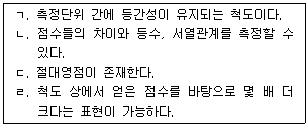
- ㄱ
- ㄱ, ㄴ
- ㄷ, ㄹ
- ㄱ, ㄴ, ㄹ
- ㄴ, ㄷ, ㄹ
(정답률: 알수없음)
37. 다음의 예에 해당하는 검사 타당도는?
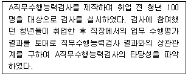
- 교차타당도
- 내적타당도
- 예언타당도
- 외적타당도
- 안면타당도
(정답률: 알수없음)
38. 변인에 관한 설명으로 옳지 않은 것은?
- 인과관계에 따라 독립변인과 종속변인으로 구분할 수 있다.
- 측정의 수준에 따라 명명변인, 서열변인, 등간변인, 비율변인으로 구분할 수 있다.
- 직접 관찰되거나 측정될 수 없기 때문에 다른 변인을 통해서 간접적으로만 측정이 가능한 변인을 '잠재변인'이라 한다.
- '교수방법과 성별은 학업성취도에 대해 상호작용효과가 있다'라고 할 때, 성별은 매개변인이다.
- 가외변인(extraneous variable)은 종속변인에 영향을 미칠 것으로 예측되지만, 통제하고자 하는 변인이다.
(정답률: 알수없음)
39. 확률적 표집방법에 해당하는 것은?
- 군집표집(cluster sampling)
- 눈덩이표집(snowball sampling)
- 편의표집(convenience sampling)
- 의도적표집(judgemental sampling)
- 할당표집(quota sampling)
(정답률: 알수없음)
40. 좌우대칭인 분포를 모두 고른 것은?
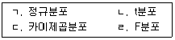
- ㄱ, ㄴ
- ㄱ, ㄷ
- ㄴ, ㄹ
- ㄱ, ㄷ, ㄹ
- ㄴ, ㄷ, ㄹ
(정답률: 알수없음)
41. 다음과 같은 특성이 가장 두드러지게 나타나는 질적 연구방법은?
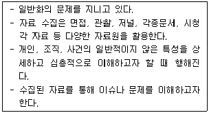
- 사례연구
- 내러티브연구
- 현상학적 연구
- 근거이론 연구
- 문화기술지 연구
(정답률: 알수없음)
42. 연구논문의 '논의' 부분에 포함될 내용으로 옳지 않은 것은?
- 연구결과에 근거하여 연구의 결론을 서술한다.
- 연구결과가 가설을 지지하는지의 여부를 밝힌다.
- 연구의 한계점을 기술한다.
- 결과가 제공하는 이론적 및 실제적 함의를 제공한다.
- 연구결과에서 얻은 수치를 사용하여 결과 내용을 정리한다.
(정답률: 알수없음)
43. 연구가설에 관한 설명으로 옳지 않은 것은?
- 변인들 간의 관계에 대한 서술이다.
- 복잡한 가설일수록 좋은 가설이다.
- 연구목적 혹은 내용에 대한 하나의 해답을 제안하는 것이어야 한다.
- 서술 방법에 따라 서술적 가설과 통계적 가설로 구분될 수 있다.
- 현재 알려져 있는 사실에 대한 설명뿐만 아니라 미래의 사실을 예측할 수 있어야 한다.
(정답률: 알수없음)
44. 표본의 크기에 영향을 미치는 요인으로 옳은 것을 모두 고른 것은?
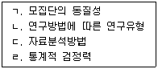
- ㄱ, ㄴ
- ㄷ, ㄹ
- ㄱ, ㄴ, ㄷ
- ㄴ, ㄷ, ㄹ
- ㄱ, ㄴ, ㄷ, ㄹ
(정답률: 알수없음)
45. 연구윤리의 일반적 원칙 중 다음에서 강조하고 있는 원칙은?
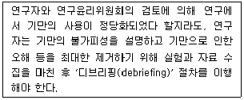
- 자율성 원칙
- 무피해 원칙
- 이익의 원칙
- 신용의 원칙
- 적합성 원칙
(정답률: 알수없음)
46. 김교사는 학습태도를 증진하는 프로그램을 실시하고 그 효과를 검증하고자 다음과 같은 단일집단 전후검사 설계를 활용하였다. 효과 검증을 위해 사용할 수 있는 가장 적합한 통계 분석방법은?
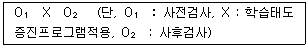
- 회귀분석
- 공변량분석
- 대응표본 t검정
- 카이제곱검정
- 독립표본 t검정
(정답률: 알수없음)
47. '수정된 중다상관제곱(adjusted )'에 영향을 줄 수 있는 요인으로 옳은 것을 모두 고른 것은?
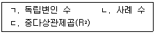
- ㄱ
- ㄷ
- ㄱ, ㄴ
- ㄴ, ㄷ
- ㄱ, ㄴ, ㄷ
(정답률: 알수없음)
48. 두 변인 X와 Y에 대한 16명의 개인별 점수를 표기한 것이다. 두 변인 간의 상관에 관한 설명으로 옳은 것을 모두 고른 것은?
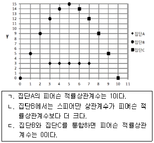
- ㄱ
- ㄴ
- ㄱ, ㄷ
- ㄴ, ㄷ
- ㄱ, ㄴ, ㄷ
(정답률: 알수없음)
49. 반분신뢰도에 관한 설명으로 옳지 않은 것은?
- 재검사 신뢰도의 일종이다.
- 다분문항에도 사용할 수 있다.
- 스피어만 브라운 공식이 사용된다.
- 추정 과정에 상관계수가 활용된다.
- 홀짝법, 전후법 등에 따라 그 결과가 달라진다.
(정답률: 알수없음)
50. Cronbach α계수에 관한 설명으로 옳은 것을 모두 고른 것은?
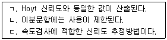
- ㄱ
- ㄴ
- ㄱ, ㄷ
- ㄴ, ㄷ
- ㄱ, ㄴ, ㄷ
(정답률: 알수없음)
51. 우울증 감소 프로그램의 효과를 검증하기 위해 다음과 같은 이질집단 전후검사 설계를 적용하였다. 효과 검증에 활용할 수 있는 통계 분석방법으로 옳은 것을 모두 고른 것은?
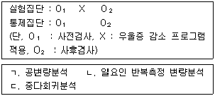
- ㄱ
- ㄴ
- ㄱ, ㄷ
- ㄴ, ㄷ
- ㄱ, ㄴ, ㄷ
(정답률: 알수없음)
52. 아동의 자존감 향상 프로그램의 효과를 검증하기 위해 사회경제적 수준이 높은 지역에 위치한 특정 유치원 아동만을 대상으로 하여 그 효과성을 입증하였다. 이 실험연구에서 외적타당도를 저해하는 가장 큰 요인은?
- 통계적 회귀
- 실험상황에 대한 반동효과
- 중다처치에 의한 간섭효과
- 검사실시와 처치 간의 상호작용
- 피험자 선발과 처치 간의 상호작용
(정답률: 알수없음)
53. 사후검정(post hoc comparison)에 해당되지 않은 것은?
- Scheffé 검정
- Fisher LSD 검정
- Tukey HSD 검정
- Levene 검정
- Duncan 검정
(정답률: 알수없음)
54. 상담사A는 부모애착의 영향을 통제한 후, 사회성에 대한 친구애착의 순수한 효과를 검증하기 위해 위계적 회귀분석을 실시하였다. 분석결과가 다음과 같을 때, 'ㄱ'에 해당하는 유의확률은?
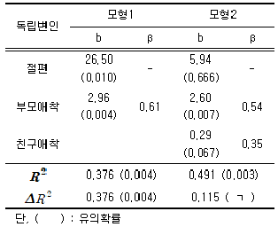
- 0.001
- 0.002
- 0.003
- 0.004
- 0.067
(정답률: 알수없음)
55. '교과태도에 대한 교수방법의 효과가 성에 따를 것이다'는 가설을 검증하기 위해 활용할 수 있는 가장 적합한 실험설계는?
- 배속설계
- 구획설계
- 요인설계
- 피험자 내 설계
- 라틴정방형 설계
(정답률: 알수없음)
56. '스트레스는 남녀 간에 차이가 있을 것이다'라는 연구가설을 검증하기 위해 남학생과 여학생을 각각 15명씩 표집하여 스트레스를 측정한 후 t검정을 실시하였다. 'ㄱ'에 해당하는 값은?
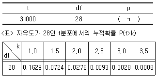
- 0.0014
- 0.0028
- 0.0⑤6
- 0.0112
- 0.0224
(정답률: 알수없음)
57. 다음에서 공통적으로 설명하고 있는 타당도는?
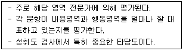
- 내용타당도
- 수렴타당도
- 예언타당도
- 공인타당도
- 변별타당도
(정답률: 알수없음)
58. 다음 실험과정에서 발생할 수 없는 내적타당도 저해요인은?
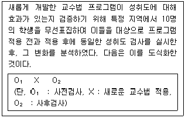
- 역사
- 성숙
- 반복검사
- 피험자 선발
- 통계적 회귀
(정답률: 알수없음)
59. 신뢰도(rxx')는 관찰점수변량(sx2)에서 진점수변량(st2)이 차지하는 비율(rxx' = st2/sx2 = (sx2 - se2)/sx2)로 정의된다. 1,000명의 학생을 대상으로 학습동기를 측정하였더니 관찰점수변량이 100점이었다. 학습동기 검사도구의 신뢰도가 0.84라고 할 때, 이 검사의 측정의 표준오차는?
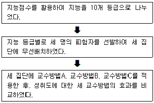
- 1
- 2
- 4
- 8
- 16
(정답률: 알수없음)
60. 다음 순서에 따라서 수행한 실험설계 방법은?
- 혼합설계
- 구획설계
- 요인설계
- 배속설계
- 라틴정방형 설계
(정답률: 알수없음)
3과목: 심리측정 평가의 활용
61. MMPI의 다음 척도가 상승했을 때 공격성과 관련하여 적절하게 해석한 것은?
- Hy : 직접 표현
- Ma : 간접 표현
- Pd : 간접 표현
- D : 자기로 향한 표현
- Hs : 자기로 향한 표현
(정답률: 알수없음)
62. MMPI-A는 MMPI-2의 11개 내용척도에 청소년에게 적용할 수 있는 4개의 내용척도를 추가하였다. 추가된 내용척도가 아닌 것은?
- 낮은포부척도(A-las)
- 가정문제척도(A-fam)
- 품행문제척도(A-con)
- 학교문제척도(A-sch)
- 소외척도(A-ain)
(정답률: 알수없음)
63. MMPI의 상승척도 쌍에 관한 해석으로 적절한 것은?
- 2 - 6 : 자신 및 타인에 대한 불안
- 2 - 7 : 우울과 불안, 그리고 긴장
- 3 - 9 : 내향적이고 적대적
- 1 - 9 : 분노와 신체기능 저하
- 4 - 6 : 관계갈등이 있고, 그 원인을 자신에게 돌림
(정답률: 알수없음)
64. 클로닝거(Cloninger)가 심리생물학적 인성모델에 기초하여 개발한 기질 및 성격검사(TCI)에서 개인이 자신을 사회의 일부로 이해하는 정도를 측정하는 기질척도는?(문제 오류로 실제시험에서는 모두 정답처리 되었습니다. 여기서는 1번을 누르면 정답 처리 됩니다.)
- 개방성
- 연대감
- 자율성
- 우호성
- 사회적 민감성
(정답률: 알수없음)
65. 성격평가질문지(PAI)에 관한 설명으로 옳지 않은 것은?
- 문항을 하위 척도에 중복 사용하지 않아서 변별타당도가 높다.
- 27개의 결정문항을 통해 위기상황에 즉각적으로 개입할 수 있다.
- 타당도척도, 임상척도, 치료척도, 대인관계척도로 구성되어 있다.
- 성격장애를 측정할 수 있어서 DSM-IV의 축Ⅱ에 관한 정보를 제공한다.
- '그렇다-아니다'의 양분법적 평정척도와 4점 척도를 사용하여 측정한다.
(정답률: 알수없음)
66. MMPI-2의 특징에 관한 설명으로 옳은 것은?
- 검사 대상자를 20세 이상으로 조정하였다.
- 선형 T를 사용하여 지표간 백분위 비교가 가능하다.
- 임상척도간의 상관을 배제하기 위해 보충척도를 추가하였다.
- 내용척도는 주로 '명백' 문항으로 구성되어 있어서 피검자의 수검태도를 고려하여 해석해야 한다.
- 성격병리 5요인에 공격성, 정신증, 통제결여, 부정적 정서성/신경증, 내향성/외향성 척도가 속한다.
(정답률: 알수없음)
67. 웩슬러(Wechsler) 지능검사에서 소검사별 환산점수의 평균(M)과 표준편차(SD)는?
- M=10, SD=2
- M=10, SD=3
- M=50, SD=10
- M=50, SD=15
- M=100, SD=15
(정답률: 알수없음)
68. NEO-PI-R에서 다음 소척도의 점수가 상승했을 때, 이에 대한 해석으로 적절한 것은?
- 신경증(N) : 과도한 욕망이나 충동
- 외향성(E) : 활동적이고 과업지향적
- 개방성(O) : 관습적이고 분석적
- 우호성(A) : 낯선 사람에 대한 관용
- 성실성(C) : 개혁적이고 지능이 높음
(정답률: 알수없음)
69. 로르샤하 검사를 실시하는 각 단계에 관한 설명으로 옳지 않은 것은?
- 자유연상 단계 : 지시를 간단히 하고 상상력 검사라는 인상을 주지 않아야 한다.
- 자유연상 단계 : X번까지 끝낸 후 총 반응수가 14개 이하이면 반응을 더 해달라고 부탁하고 검사를 다시 할 수 있다.
- 질문단계 : 반응을 유도할 수 있는 질문은 피해야 한다.
- 질문단계 : 자유연상단계에서 피검자가 무엇을 보았다고 하였는지 알려주지 않고 기억을 측정한다.
- 한계음미단계 : 평범반응을 보고하지 않은 경우 피검자에게 평범반응을 알려주고 피검자가 평범반응을 볼 수 있는지 확인할 수 있다.
(정답률: 알수없음)
70. 웩슬러 성인용 지능검사 4판(WAIS-IV)의 핵심 소검사에 해당하지 않는 것은?
- 숫자
- 공통성
- 빠진곳찾기
- 토막짜기
- 기호쓰기
(정답률: 알수없음)
71. 주제통각검사(TAT)에 관한 설명으로 옳지 않은 것은?
- 30장의 그림카드와 1장의 백지카드로 구성되어 있다.
- 사고의 형식을 주로 본다는 점에서 로르샤하 검사와 대비된다.
- 피검자의 이야기는 의식의 흐름을 반영하므로 방해하지 않는다.
- Murray는 그림 속 등장인물의 욕구와 환경적 압력을 분석하였다.
- 이야기를 만드는 사람의 성향이나 갈등 등이 직ㆍ간접적으로 표현된다.
(정답률: 알수없음)
72. HTP의 집과 나무그림에서 환경과의 상호작용을 반영하는 것은?
- 굴뚝, 나무뿌리
- 굴뚝, 나무기둥
- 문, 나뭇가지
- 문, 나무뿌리
- 지붕, 나뭇가지
(정답률: 알수없음)
73. 지능 및 인지검사에 관한 설명으로 옳은 것은?
- 모양맞추기와 차례맞추기는 WAIS-IV에서 제외되었다.
- WAIS-IV의 언어이해 소검사에는 공통성, 어휘, 상식, 이해, 산수가 포함된다.
- K-ABC 동시처리척도의 점수가 낮으면 우반구에 손상이 있는 것으로 해석한다.
- BGT는 시간의 제한을 주고 카드의 도형을 보고 그리게 하여 형태심리학적 평가를 한다.
- WAIS-IV에서 되돌아가기 규칙이란 피검자가 완전한 점수를 받는 문항까지 역순으로 실시하는 것을 말한다.
(정답률: 알수없음)
74. WAIS-IV를 다시 받을 때 상대적으로 연습효과에 취약한 소검사를 모두 고른 것은?
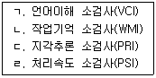
- ㄱ, ㄴ
- ㄴ, ㄷ
- ㄷ, ㄹ
- ㄱ, ㄴ, ㄷ
- ㄱ, ㄷ, ㄹ
(정답률: 알수없음)
75. 로르샤하 검사에 관한 설명으로 옳은 것은?
- Lambda는 경험과 문제를 현실적으로 지각하는 정도를 나타낸다.
- WSum6가 크면 논리적이고 조리있는 사고를 하고 있음을 의미한다.
- 반점의 한 부분에서 지각한 것을 전체 영역으로 일반화하면 FABCOM으로 채점한다.
- P는 독창적으로 반응하는 사람들의 특징을 반영한다.
- 잉크반점에서 평소 잘 사용되지 않는 부분을 보고 반응할 때 Dd로 채점한다.
(정답률: 알수없음)
76. 법정신감정을 목적으로 MMPI를 활용할 때, 해석 시 특히 유의해야 할 조합은?
- F척도, F-K 지표, 8번 척도의 상승
- K척도, 6번, 8번 척도의 상승
- F척도, 1번, 3번 척도의 상승
- 6번, 8번, 9번 척도의 상승
- L척도, 4번 척도의 상승
(정답률: 알수없음)
77. 지능요인을 성격의 한 범주로서 평가하고 있는 검사는?
- NEO-PI-R
- MCMI-III
- 16PF
- CPI
- PAI
(정답률: 알수없음)
78. 다음에 제시된 문항의 난이도(p)와 변별도(rPB)에 관한 설명으로 적절하지 않은 것은?
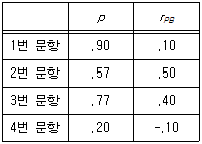
- 1번 문항은 너무 쉬워서 문항변별도가 좋지 않다.
- 4번 문항을 맞춘 피검자들은 오히려 수행수준이 낮은 사람들이었다.
- 2번과 3번 문항은 우수한 변별도를 지니지만 3번 문항은 2번 문항보다 쉽다.
- 수행수준이 매우 높은 피검자들이라면 4번 문항의 변별력이 오히려 더 좋을 수 있다.
- 수행수준이 높은 편인 피검자들에게 있어서 비교적 적절한 문항 변별력을 지니는 문항은 2번 문항이다.
(정답률: 알수없음)
79. 다음에 제시된 심리검사의 최초 개발 시기를 순서대로 나열한 것은?
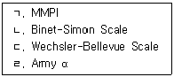
- ㄱ → ㄴ → ㄷ → ㄹ
- ㄴ → ㄷ → ㄱ → ㄹ
- ㄴ → ㄹ → ㄷ → ㄱ
- ㄹ → ㄴ → ㄱ → ㄷ
- ㄹ → ㄴ → ㄷ → ㄱ
(정답률: 알수없음)
80. 구인(construct)에 대한 선호도를 표시하는 문항들을 모아 척도로 만드는 '자극 중심 척도화' 기법은?
- 의미변별척도
- 강제선택형척도
- 리커트(Likert)척도
- 거트만(Guttman)척도
- 서스톤(Thurstone)척도
(정답률: 알수없음)
81. 내적합치도를 확인할 수 있는 신뢰도 지수들로 짝지어진 것은?
- 선발비와 KR-20
- KR-20과 phi계수
- 반분신뢰도와 phi계수
- KR-21와 Cronbach α계수
- 동형검사신뢰도와 Cronbach α계수
(정답률: 알수없음)
82. 성취도검사의 총점에 있어 상ㆍ하위 25% 집단의 특정 문항에 대한 답지별 선택비율이다. 정답이 4번이라고 할 때, 이 문항에 대한 설명으로 옳은 것은?
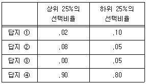
- 정답률은 .85이다.
- 변별도는 음수이다.
- 변별도가 낮은 편이다.
- 어려운 문항이다.
- 모든 오답지가 매력 있다.
(정답률: 알수없음)
83. 예언타당도와 관련된 통계치 및 분석방법이 아닌 것은?
- 고유치
- 생존분석
- 파이계수
- ROC분석
- 로지스틱회귀분석
(정답률: 알수없음)
84. 등간성을 가정할 수 있는 척도는?
- 등수
- 사분위(quartiles)
- 백분위(percentile rank)
- 편차(deviation) 지능지수
- 연령 동등(age-equivalent) 점수
(정답률: 알수없음)
85. 체계적(구조화된) 면담기법의 특징을 모두 고른 것은?
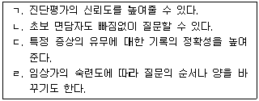
- ㄱ, ㄴ
- ㄷ, ㄹ
- ㄱ, ㄴ, ㄷ
- ㄱ, ㄷ, ㄹ
- ㄴ, ㄷ, ㄹ
(정답률: 알수없음)
86. 다특성-다방법 행렬에서 알 수 있는 정보가 아닌 것은?
- 신뢰도
- 구인타당도
- 변별타당도
- 수렴타당도
- 예언타당도
(정답률: 알수없음)
87. 탐색적 요인분석의 단계를 적절히 나열한 것은?
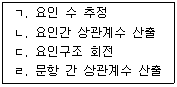
- ㄱ → ㄴ → ㄷ → ㄹ
- ㄱ → ㄴ → ㄹ → ㄷ
- ㄴ → ㄱ → ㄹ → ㄷ
- ㄹ → ㄱ → ㄷ → ㄴ
- ㄹ → ㄷ → ㄴ → ㄱ
(정답률: 알수없음)
88. 행동평가의 기본 전제로 옳지 않은 것은?
- 다요인결정론을 전제한다.
- 행동과 인접한 환경적 사건이 중요하다고 전제한다.
- 개인의 행동이 환경에 영향을 줄 수도 있다고 전제한다.
- 행동은 단편적인 요소들에 의해 구성되어 있다고 전제한다.
- 환경 변화에도 불구하고 안정적으로 유지되는 내재적 특성을 전제한다.
(정답률: 알수없음)
89. 지능검사를 200명의 고등학생에게 실시한 결과, 평균이 100점이고 표준편차가 15점이었다. 이 검사의 측정의 표준오차는 5점이었다. 120점을 획득한 영희의 지능검사 결과에 대한 해석으로서, 괄호 안에 들어갈 숫자를 바르게 나열한 것은?
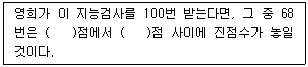
- 85, 115
- 95, 1⑤
- 1⑤, 135
- 110, 130
- 115, 125
(정답률: 알수없음)
90. 투사적 검사의 장점을 모두 고른 것은?
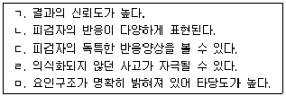
- ㄱ, ㄴ, ㄷ
- ㄴ, ㄷ, ㄹ
- ㄴ, ㄷ, ㅁ
- ㄷ, ㄹ, ㅁ
- ㄴ, ㄷ, ㄹ, ㅁ
(정답률: 알수없음)
4과목: 이상심리
91. 고통을 경감시키는 작용을 하는 신체 내 분비물질은?
- 헤로인과 코데인
- 세로토닌과 도파민
- 엔돌핀과 엔케팔린
- 에피네프린과 노르에피네프린
- 감마아미노뷰트릭산과 아세틸콜린
(정답률: 알수없음)
92. 도박장애에 관한 설명으로 옳은 것을 모두 고른 것은?
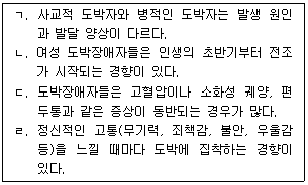
- ㄱ, ㄴ
- ㄱ, ㄷ
- ㄷ, ㄹ
- ㄱ, ㄷ, ㄹ
- ㄴ, ㄷ, ㄹ
(정답률: 알수없음)
93. 수면장애에 관한 설명으로 옳은 것을 모두 고른 것은?
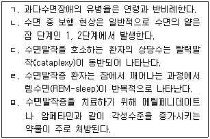
- ㄱ, ㄴ
- ㄱ, ㄷ, ㄹ
- ㄴ, ㄷ, ㅁ
- ㄷ, ㄹ, ㅁ
- ㄱ, ㄷ, ㄹ, ㅁ
(정답률: 알수없음)
94. 성격장애의 일반적인 특징이 아닌 것은?
- 비사회성
- 우울과 같은 침체된 정서
- 깊이있는 정서적 교감의 결여
- 집단과 개인에 대한 믿음의 결여
- 자신의 성격이나 태도에 대한 통찰력 부족
(정답률: 알수없음)
95. 우울증에 관한 아브람슨(Abramson)의 이론에 따르면, 우울장애의 만성화 정도에 영향을 미치는 귀인방식은?
- 실패경험에 대한 내부적 귀인
- 실패경험에 대한 안정적 귀인
- 실패경험에 대한 전반적 귀인
- 성공경험에 대한 예측 불가능 귀인
- 성공경험에 대한 통제 불가능 귀인
(정답률: 알수없음)
96. 체계적 둔감법(systematic desensitization)에 관한 설명으로 옳지 않은 것은?
- 불안위계표를 사용한다.
- 공포증의 치료에 효과적이다.
- 역조건화의 기제와 관련이 있다.
- 울피(Wolpe)에 의해 개발된 치료기법이다.
- 도구적 조건화의 원리를 주로 적용한다.
(정답률: 알수없음)
97. 병의 원인보다는 증상의 일차적인 해소에 초점을 두고 있는 심리치료 방법은?
- 정신분석
- 현실치료
- 인간중심치료
- 교류분석
- 행동치료
(정답률: 알수없음)
98. 극적이고 변덕스러운 B군 성격장애에 포함되지 않는 것은?
- 경계선 성격장애
- 강박성 성격장애
- 반사회성 성격장애
- 연극성 성격장애
- 자기애성 성격장애
(정답률: 알수없음)
99. 내원한 젊은 여성 환자가 정체감 혼란, 충동적인 성관계, 반복적인 자살위협, 일시적인 해리증상 등을 보이고 있으나, 기질적인 손상은 없는 것으로 확인되었다. 이 환자에게 올바른 진단은?
- 적응장애
- 충동조절장애
- 외상 후 스트레스 장애
- 우울장애
- 경계선 성격장애
(정답률: 알수없음)
100. 우울증에 관한 설명 중 옳은 것을 모두 고른 것은?
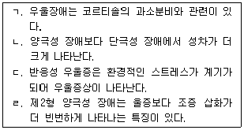
- ㄱ, ㄴ
- ㄱ, ㄷ
- ㄴ, ㄷ
- ㄴ, ㄹ
- ㄱ, ㄷ, ㄹ
(정답률: 알수없음)
101. 분열성(schizoid) 성격장애의 특징을 모두 고른 것은?
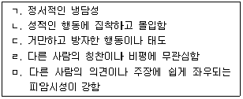
- ㄱ, ㄹ
- ㄱ, ㅁ
- ㄴ, ㄹ
- ㄱ, ㄴ, ㅁ
- ㄴ, ㄷ, ㄹ
(정답률: 알수없음)
102. 자가중독(auto addictive)이론이나 설정점(set point)이론으로 설명할 수 있는 장애는?
- 수면-각성장애
- 성기능장애
- 물질관련장애
- 섭식장애
- 외상후 스트레스 장애
(정답률: 알수없음)
103. 뇌손상이 시사되는 질병이 아닌 것은?
- 테이 삭스 질환
- 헌팅턴 질환
- 픽 질환
- 알츠하이머 질환
- 파킨슨 질환
(정답률: 알수없음)
104. 물질의존 장애를 일으킬 수 있는 약물을 모두 고른 것은?
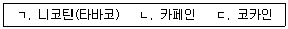
- ㄱ
- ㄱ, ㄴ
- ㄱ, ㄷ
- ㄴ, ㄷ
- ㄱ, ㄴ, ㄷ
(정답률: 알수없음)
1⑤. 기억 상실, 지각적 결함, 주도성의 결여, 작화증과 같이 주로 인지적인 기능 손상을 일으키는 코르사코프 증후군이 포함되는 장애는?
- 정신분열증
- 해리성장애
- 수면-각성장애
- 신경인지장애
- 알코올 관련 장애
(정답률: 알수없음)
106. 다음 설명에 가장 적합한 정신증(psychosis)은?
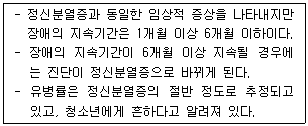
- 분열정동장애
- 정신분열형장애
- 망상장애
- 공유 정신증적 장애
- 단기 정신증적 장애
(정답률: 알수없음)
107. 정신분열증의 주요 증상과 관련성이 가장 적은 것은?
- 환각과 같은 지각장애가 나타난다.
- 와해된 언어 및 사고장애가 나타난다.
- 무논리증 또는 무욕증과 같은 정서적 둔마가 나타난다.
- 기분이나 감정의 기복이 심하고 우울증이 나타난다.
- 슬픈 이야기를 하면서 무표정하거나 화를 내고 망상을 나타낸다.
(정답률: 알수없음)
108. 정신분열 스펙트럼 장애 및 기타 정신증적 장애의 하위 유형이 아닌 것은?
- 분열성 성격장애
- 정신분열형 장애
- 단기 정신증적 장애
- 망상 장애
- 분열정동장애
(정답률: 알수없음)
109. 정신분열증의 발병 원인 또는 증상 기여에 관한 가설을 모두 고른 것은?
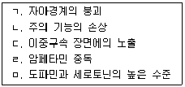
- ㄱ, ㄴ, ㄷ
- ㄴ, ㄷ, ㄹ
- ㄷ, ㄹ, ㅁ
- ㄹ, ㅁ, ㄱ
- ㄱ, ㄴ, ㄷ, ㅁ
(정답률: 알수없음)
110. 의사소통 장애의 하위 유형에 해당되지 않는 것은?
- 아동기 발병 유창성 장애(말더듬기)
- 언어장애
- 아동기 붕괴성 장애
- 사회적 의사소통 장애
- 발화음 장애(음성학적 장애)
(정답률: 알수없음)
111. 자폐증 또는 자폐 스펙트럼 장애의 설명으로 옳지 않은 것은?
- 출생 후 부모의 성격이나 양육방식에 의해 주로 유발된다.
- 자폐증은 캐너증후군(Kanner's syndrome)이라고도 한다.
- 다양한 맥락에 걸쳐 사회적 상호작용의 결함이 나타난다.
- 대부분 3세 이전에 발병하고, 남자가 여자보다 3∼4배 정도 더 많다.
- 행동, 흥미, 활동에 있어서 제한적이고 반복적인 의식화된 패턴을 나타낸다.
(정답률: 알수없음)
112. 정신장애의 진단 및 통계편람에 관한 설명으로 옳지 않은 것은?
- 1950년대에 처음으로 발간된 이후 현재 DSM-5까지 이르고 있다.
- 정신장애의 원인보다는 질환의 증상과 증후들에 많은 초점을 두었다.
- 정신질환자들의 분류체계와 진단을 효율적으로 적용하기 위해 마련되었다.
- 미국정신의학회(APA)에서 발간한 책자로 인간의 사망과 질병 통계 작성을 위해 마련되었다.
- 정신의학적 진단의 타당성과 신뢰성을 확보하기 위해 출간되었다.
(정답률: 알수없음)
113. 특정 공포증의 하위 유형이 아닌 것은?
- 동물형
- 자연환경형
- 혈액-주사-상처형
- 대인공포형
- 상황형
(정답률: 알수없음)
114. 다음에서 설명하고 있는 지적장애(정신지체)는?
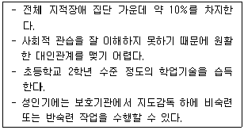
- 경계선 정도(borderline)의 정신지체
- 가벼운 정도(mild)의 정신지체
- 중간 정도(moderate)의 정신지체
- 심한 정도(severe)의 정신지체
- 아주 심한 정도(profound)의 정신지체
(정답률: 알수없음)
115. 이식증(pica)에 관한 설명이 아닌 것은?
- 발달수준에 맞지 않게 비영양성 물질을 먹는다.
- 음식물의 반복적인 역류와 되씹기 행동이 있다.
- 영양 결핍, 특히 철분 결핍에 의해서 유발될 수 있다.
- 적어도 1개월 이상 비영양성 물질을 지속적으로 먹는다.
- 흔히 지적장애를 동반하며, 지적장애가 심할수록 증상의 빈도가 증가한다.
(정답률: 알수없음)
116. 학습장애에 관한 설명으로 옳지 않은 것은?
- 부주의하고 충동적인 측면을 가지고 있다.
- 수학적 추론에서의 어려움을 나타낸다.
- 자신의 생각을 말로 표현하는데 곤란을 느낀다.
- 지능이 떨어지고 자폐적인 측면이 있다.
- 잠재력과 실제 성취 간에 차이가 있다.
(정답률: 알수없음)
117. 불안은 임박한 또는 예상되는 불행에 대해 느끼는 불쾌하고 막연한 염려로 볼 수 있다. 불안장애의 하위유형에 해당되지 않는 것은?
- 특정 공포증
- 질병불안장애(건강염려증)
- 공황장애
- 사회불안장애(사회공포증)
- 일반불안장애(범불안장애)
(정답률: 알수없음)
118. 아래와 같은 증상을 보이는 장애의 원인으로 보기 어려운 것은?
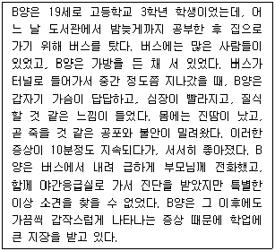
- 도파민의 과잉분비
- 과잉호흡이론(hyperventilation)
- 뇌의 청반핵(locus ceruleus) 민감성
- 분리불안 경험의 재현
- 신체감각의 파국적인 해석
(정답률: 알수없음)
119. 허위성장애 또는 가성장애에 관한 설명으로 옳은 것을 모두 고른 것은?
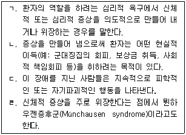
- ㄴ, ㄷ
- ㄷ, ㄹ
- ㄴ, ㄷ, ㄹ
- ㄱ, ㄷ, ㄹ
- ㄱ, ㄴ, ㄷ, ㄹ
(정답률: 알수없음)
120. 일반적으로 강한 심리적 충격이나 외상을 경험한 후 개인의 통합적인 기능, 즉 의식, 기억, 자기정체감, 그리고 환경에 대한 지각 등에서 붕괴가 나타나는 정신장애는?
- 해리장애
- 전환장애
- 가성장애
- 공황장애
- 적응장애
(정답률: 알수없음)